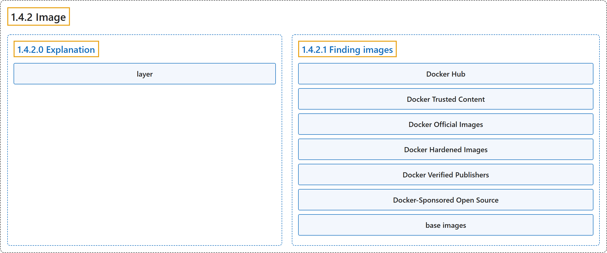

1.4.2 Image
Classification

Glossary
| Term | Definition | 中文翻译 | Source |
|---|---|---|---|
| 1.4.2 Image 镜像 |
"A container image is a standardized package that includes all of the files, binaries, libraries, and configurations to run a container." | 容器镜像是一个标准化的包，包含全部文件、二进制文件、库和配置，用于运行一个容器。 | Docker Inc., n.d., "Explanation", para. 2 |
| 1.4.2.0 Explanation 说明 |
(No definition) | （无定义） | Docker Inc., n.d., "Explanation" |
| layer 层 |
"Container images are composed of layers. Each layer represents a set of file system changes that add, remove, or modify files." | 容器镜像由层组成。每一层代表一组文件系统变更，用于新增、删除或修改文件。 | Docker Inc., n.d., "Explanation", para. 6 |
| 1.4.2.1 Finding images 查找镜像 |
(No definition) | （无定义） | Docker Inc., n.d., "Finding images" |
| Docker Hub Docker Hub |
"Docker Hub is the default global marketplace for storing and distributing images." | Docker Hub 是默认的全球市场，用于存储和分发镜像。 | Docker Inc., n.d., "Finding images", para. 1 |
| Docker Trusted Content Docker 可信内容 |
"Docker Hub provides a variety of Docker-supported and endorsed images known as Docker Trusted Content." | Docker Hub 提供多种由 Docker 支持和认可的镜像，称为 Docker 可信内容。 | Docker Inc., n.d., "Finding images", para. 2 |
| Docker Official Images Docker 官方镜像 |
"Docker Official Images - a curated set of Docker repositories, serve as the starting point for the majority of users, and are some of the most secure on Docker Hub" | Docker 官方镜像：一组精选的 Docker 仓库，是大多数用户的起点，也是 Docker Hub 上最安全的镜像之一 | Docker Inc., n.d., "Finding images", para. 3 |
| Docker Hardened Images Docker 加固镜像 |
"Docker Hardened Images - minimal, secure, production-ready images with near-zero CVEs, designed to reduce attack surface and simplify compliance." | Docker 加固镜像：精简、安全、可用于生产的镜像，其 CVE 近乎为零，旨在缩小攻击面、简化合规。 | Docker Inc., n.d., "Finding images", para. 4 |
| Docker Verified Publishers Docker 认证发布者 |
"Docker Verified Publishers - high-quality images from commercial publishers verified by Docker" | Docker 认证发布者：高质量镜像，来自经 Docker 认证的商业发布者 | Docker Inc., n.d., "Finding images", para. 5 |
| Docker-Sponsored Open Source Docker 赞助的开源项目 |
"Docker-Sponsored Open Source - images published and maintained by open-source projects sponsored by Docker through Docker's open source program" | Docker 赞助的开源项目：发布和维护的镜像，来自由 Docker 赞助的开源项目，通过 Docker 的开源计划 | Docker Inc., n.d., "Finding images", para. 6 |
| base images 基础镜像 |
"There are also base images, like the Node.js Docker image, that you can use as a starting point and add your own files and configurations." | 还有一些基础镜像，例如 Node.js Docker 镜像，你可以把它作为起点，再加入自己的文件和配置。 | Docker Inc., n.d., "Finding images", para. 7 |
References
Docker Inc. (n.d.). What is an image? Docker Docs. Retrieved October 31, 2026, from https://docs.docker.com/get-started/docker-concepts/the-basics/what-is-an-image/